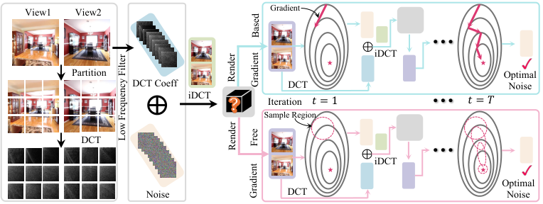
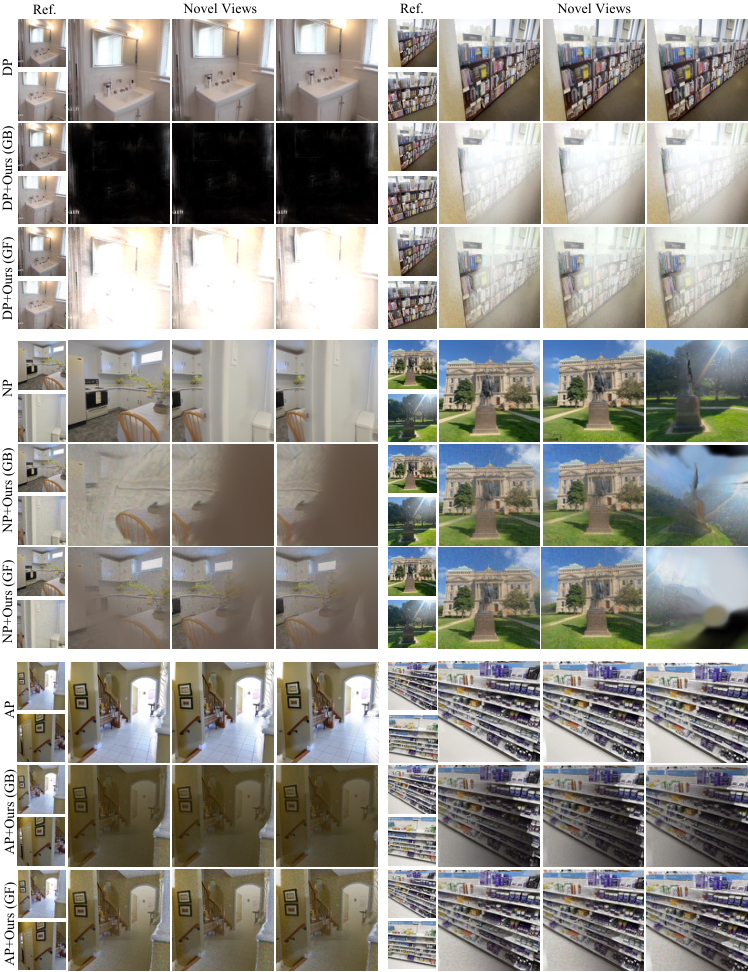
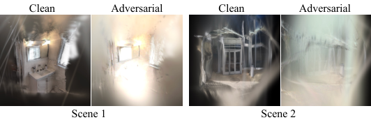
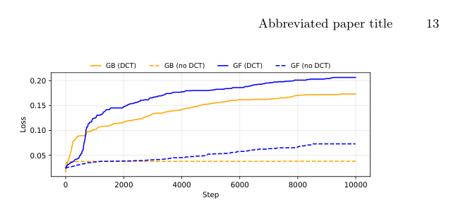
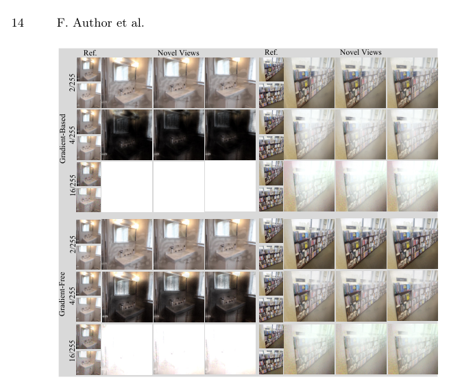

AdvSplat
简单摘要
3D 高斯分布 (3DGS) 越来越被认为是实时、高保真 3D 重建的强大范例。作者的总体方法路径是：最近出现的前馈 3DGS 模型通过在大规模预训练后从几个输入视图进行快速重建来解决这些限制，而无需针对特定场景进行优化。
另外一个关键点是，在本文中，我们介绍了 AdvSplat，这是第一个针对前馈 3DGS 对抗性攻击的系统研究。从结果来看，跨多个数据集的大量实验表明，AdvSplat 可以通过向输入图像注入难以察觉的扰动来显着破坏重建结果。


3D 重建从多视图 2D 图像中恢复 3D 几何形状和结构。作者的总体方法路径是：代表性范例包括 NeRF 和 3D 高斯泼溅 (3DGS)，后者由于实时渲染和高保真重建而成为主导。
另外一个关键点是，这些限制阻碍了其在少视图、近即时重建场景中的实用性。从结果来看，相比之下，前馈 3DGS 通过少量视图输入的大规模预训练缓解了这些问题，为基础模型式 3D 重建和更广泛的商业部署提供了强大的潜力。
核心创新
这篇工作的创新不是简单堆模块，而是把问题重新定义为：在本文中，我们介绍了 AdvSplat，这是第一个针对前馈 3DGS 对抗性攻击的系统研究。
另一项关键新意在于：我们首先采用白盒攻击来揭示该模型系列的基本漏洞。这使方法不只是能生成结果，更能解释为什么会有效。
进一步看，然后，我们专注于黑盒攻击，并提出两种基于扰动的有效频域参数化的改进的、有效的和查询高效的攻击算法（基于梯度和无梯度），如图1所示。这也是它和纯工程拼装方案拉开差距的地方。
技术细节
方法主干可以概括为：是否可以对输入图像构建难以察觉的扰动，从而显着降低重建质量。其中最关键的环节是：与分类不同，重建不涉及离散标签。这种设计直接带来的效果是：其中 MSE 代表均方误差，是步骤 处的输入图像，是步骤 处的渲染图像，具有相同的姿势，是平衡权重。从训练与推理角度看，作者还专门处理了：Fig:teaser 中的结果表明，白盒攻击对前馈 3DGS 模型有效，产生导致重建质量崩溃的对抗性示例。这组公式用于定义模型中的变量关系和训练目标。建议先看左侧要预测的对象，再看右侧每一项如何约束优化方向。该公式用于定义核心计算关系。阅读时先看左侧目标量，再看右侧由 I、p、q、j 等变量构成的约束和聚合方式。该公式用于定义核心计算关系。阅读时先看左侧目标量，再看右侧由 t、x、S、x_t 等变量构成的约束和聚合方式。该公式用于定义核心计算关系。阅读时先看左侧目标量，再看右侧由 C、k、i、k 等变量构成的约束和聚合方式。这组公式用于定义模型中的变量关系和训练目标。建议先看左侧要预测的对象，再看右侧每一项如何约束优化方向。该公式用于定义核心计算关系。阅读时先看左侧目标量，再看右侧由 I、j、C、j 等变量构成的约束和聚合方式。该公式用于定义核心计算关系。阅读时先看左侧目标量，再看右侧由 I、L、m、M 等变量构成的约束和聚合方式。该公式用于定义核心计算关系。阅读时先看左侧目标量，再看右侧由 I、j、J、C 等变量构成的约束和聚合方式。
$$ \bm{f_{\theta}}:\{(\bm{I}^i,\bm{P}^i)\}_{i=1}^{N}\mapsto \{(\bm{\mu}_j,\alpha_j,\bm{\Sigma}_j,\bm{c}_j)\}_{j=1}^{H\times W\times N}, $$
$$ \bm{I}_r(p,q) = \sum_{j \in \mathcal{V}} c_j \alpha_j \prod_{l=1}^{j-1} (1 - \alpha_l), $$
$$ x_{t+1} = \Pi_{x + \mathcal{S}} \left( x_t + \eta \, \text{sgn} \left( \nabla_x \mathcal{L}(\theta, f(x_t), y) \right) \right), $$
$$ \bm{C}_{k,i}=\gamma(k)\cos\!\left(\frac{\pi}{n}\left(i+\frac{1}{2}\right)k\right), $$
$$ \bm{F}^j = \bm{C}^j \bm{I}_b^j \bm{C}^{j\top}, $$
$$ {\bm{I}_b^j}' = \bm{C}^{j\top} \begin{bmatrix} \bm{F}_{0:s-1,\;0:s-1}^j+\bm{\delta}^j & \bm{F}_{0:s-1,\;s:n-1}^j\\[3pt] \bm{F}_{s:n-1,\;0:s-1}^j & \bm{F}_{s:n-1,\;s:n-1}^j \end{bmatrix}\bm{C}^j, $$
$$ \nabla_{\bm{I}}\mathcal{L}(\theta) \approx \frac{1}{2M\sigma}\sum_{m=1}^{M} (\mathcal{L}(\bm{I}_m'^+,\bm{I}_{r,(m)}'^+)-\mathcal{L}(\bm{I}_m'^-,\bm{I}_{r,(m)}'^-)\mathbf{u}_m, $$
$$ \bm{I}_m'^+={\text{cat}}_{j=1}^J(\bm{C}^{j\top}(\bm{F}_{ss}^j+\sigma\bm{u}_m^j)\bm{C}^j), \bm{I}_m'^-={\text{cat}}_{j=1}^J(\bm{C}^{j\top}(\bm{F}_{ss}^j-\sigma\bm{u}_m^j)\bm{C}^j), $$




实验结论
实验主要围绕一个核心问题展开验证：指标我们采用标准图像质量指标，包括峰值信噪比（PSNR）、结构相似度（SSIM）和学习感知图像块相似度（LPIPS）。
从主要对比结果来看，所有指标都是在渲染图像和真实图像之间计算的。定性结果与消融实验进一步表明：如 tab:re10k 和 tab:dl3dv 所示，我们的攻击方法显着降低了所有受害者模型在所有指标上的性能。
理解评价
从整篇论文看，它的真正贡献是：最近出现的前馈 3DGS 模型通过在大规模预训练后从几个输入视图进行快速重建来解决这些限制，而无需针对特定场景进行优化，而不是单纯把扩散模型继续微调。作者把问题落在“分布外驾驶场景如何稳定生成”这个更关键的缺口上。
它最有说服力的地方在于：跨多个数据集的大量实验表明，AdvSplat 可以通过向输入图像注入难以察觉的扰动来显着破坏重建结果。这说明论文的方法链路——3D 点云编辑、车辆补全、再到 RL 后训练——是前后闭合的，而不是各模块各自堆叠。
主要局限在于：最近出现的前馈 3DGS 模型通过在大规模预训练后从几个输入视图进行快速重建来解决这些限制，而无需针对特定场景进行优化。如果继续往前推进，一个自然方向是把更长时序、更低成本训练和更广泛的 OOD 场景覆盖一起纳入统一评估。
以下相关论文可作为延伸阅读：。未来可以从数据覆盖、训练效率与跨场景泛化三个方向继续改进，以提升稳定性与可部署性。